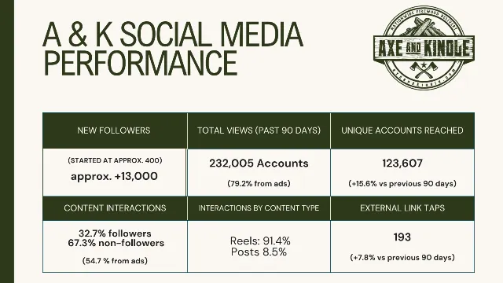
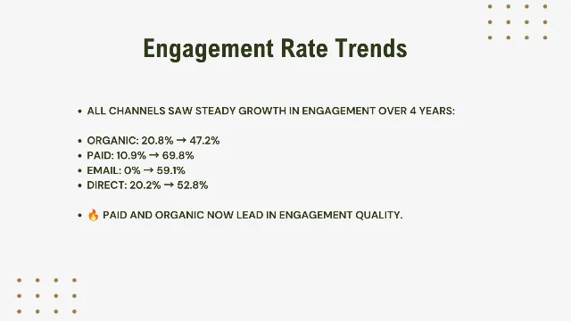
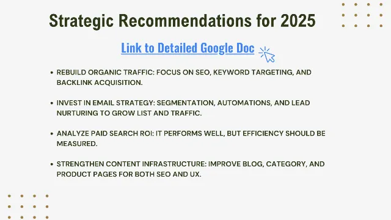

← Selected work / Analytics & Reporting
Turning four data sources into one story.
I built a 32-slide analytics review for Axe & Kindle and Every Window — GA4, Google Search Console, Instagram Insights and Drip — and turned it into channel priorities for 2025.



- Role
- Analyst & author
- Sources
- GA4 · Search Console · Instagram Insights · Drip
- Deliverable
- 32-slide deck + roadmap docs
- Date
- March–April 2025
Lots of data, no single picture.
Traffic, social, search and email data for Axe & Kindle and Every Window lived in different tools. Leadership needed one view of what had changed since 2022, which channels were pulling their weight, and where to focus next.
Same framework for both brands.
- One structure, two brands: audience → social performance → GA4 acquisition → organic search → Search Console → email → engagement → channel efficiency → recommendations.
- Quality over volume: look at engagement rate and revenue per channel, not just sessions.
- Call out measurement gaps: explain what GA4 can misattribute (untagged ads, dark social) so decisions aren't built on bad data.
Pulled it, analyzed it, presented it.
- Pulled and reconciled data from GA4, Google Search Console, Instagram Insights and Drip for 2022–2025.
- Designed the 32-slide presentation in Canva and wrote every takeaway.
- Wrote supporting strategy documents, including a quarter-by-quarter roadmap.
Findings that drive decisions.
- Engagement quality rose across channels: for Axe & Kindle, organic engagement rate went from 20.8% to 47.2% and paid from 10.9% to 69.8% between 2022 and 2025.
- Channel roles became clear: organic search was the most efficient long-term channel, paid search a high-volume driver needing tighter ROI tracking, and email small but with best-in-class engagement.
- Social views were ad-assisted: Instagram Insights showed most recent views came from ads (79% for Axe & Kindle, 98% for Every Window) — an honest read on what organic content was and wasn't doing.
What the review showed.
Follower counts are approximate gains since I started managing each account, as reported in the deck; The deck attributes most views in that window to paid ads, so I present them as ad-assisted growth rather than organic. Company revenue figures from GA4 are part of the original analysis but are intentionally left off this public page.
Source: my “AK & EW Analytics Presentation, 2022–Present” (Canva), using GA4, Google Search Console, Instagram Insights and Drip data; prepared March–April 2025.
What I recommended.
- Rebuild organic search: target top 2023 keywords, fix technical SEO, and strengthen category and product pages.
- Scale email: grow the list, segment it, and add automations (welcome, cart and browse abandonment, win-back).
- Measure paid search ROI: audit ROAS, trim low performers, shift to branded and bottom-funnel audiences.
- Improve conversion paths: scroll-depth tracking, clearer CTAs, and user testing on key pages.
See the creative.
Tap any slide to view it full size. Use arrow keys or swipe to move through a carousel.
Axe & Kindle review
Audience, social performance, search, email, engagement trends, channel efficiency and recommendations. Revenue slides omitted.
Every Window review
The same framework applied to Every Window, ending in a detailed 2025 roadmap. Revenue slides omitted.